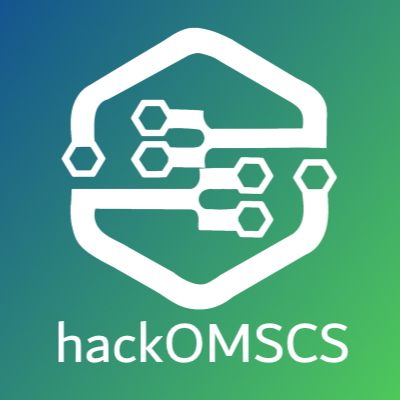

Awakening AI - HackOMSCS Winner
AI-powered fridge analysis app using Computer Vision to identify ingredients and recommend recipes. Built with Azure Cloud Services.
View Project →I'm Adam von Kannewurff, a software developer focused on web and systems applications.
A selection of recent work focusing on clean code and sustainable web standards.

AI-powered fridge analysis app using Computer Vision to identify ingredients and recommend recipes. Built with Azure Cloud Services.
View Project →Fault-tolerant distributed consensus algorithm implemented from scratch handling leader election, log replication, and garbage collection.
View Project →
Distributed data processing framework in C++ using gRPC for worker management, fault tolerance, and data sharding.
View Project →